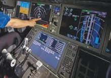
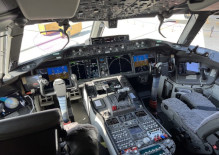
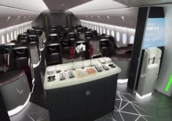
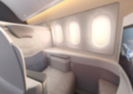
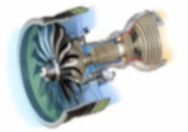
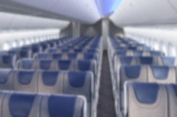
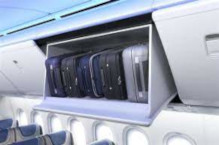

Cockpit
A mais recente tecnologia e inovação de cabine de comando
 O 1º cockpit na aviação comercial a ter telas touch screen, sensíveis ao simples toque. Isto resulta em maior agilidade e remoção de diversos botões.
Primeira Classe
O 777-9 oferece uma configuração com poltronas mais reservadas.
As melhorias mais aparentes para o público executivo é sua cabine individualizada e modernizada, criando um ambiente particular para seu público mais exigente.
 Motor
O motor mais avançado do mundo, o General Electric GE9X.
É esperado que este motor forneça um aumento de 5% na eficiência, fazendo com que, diminua o custo operacional. As tecnologias exclusivas da GE trazem um SFC 5% melhor que qualquer outro motor.
Asas
A asa do Boeing 777X é diferente de qualquer outra encontrada.
A peça mais notável deste avião são suas asas. Com a incrível capacidade de dobrar as ponta da asa para cima, a Boeing conciliou entre uma envergadura maior e melhorar a sustentação com a resultante economia de combustível, sem afetar a capacidade da aeronave de usar portões de largura padrão nos aeroportos.
Logo
Empresas que já adquiriram os seus Boeing 777-9.
All Nippon Airways British Airways Cathay Pacific Limited Lufthansa Emirates Etihad Airways Qatar Airways Singapore Airlines
Cabine
O 777-9 oferece uma cabine mais ampla
As melhorias para o público em geral será uma cabine modernizada com janelas maiores e uma cabine mais espaçosa com iluminação contemporânea.
O 777-9 oferece uma cabine mais ampla para maior flexibilidade, fazendo com que, as espessuras das paredes da cabine fossem reduzidas em 2 polegadas de cada lado.
 